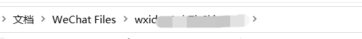
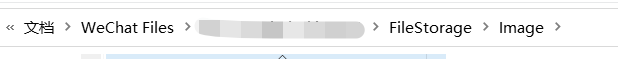
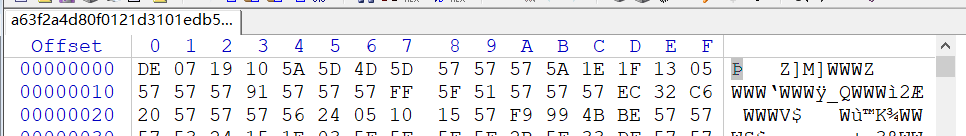
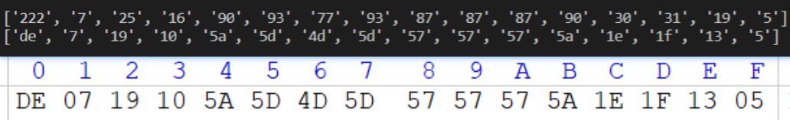

今天偶然看到一篇文章，思路很棒，值得学习
https://mp.weixin.qq.com/s/rvkhkvirdq6Ab64n-lIn0Q
PCvx的文件路径一般放在C盘的文档下的WeChat Files里，每个账号的vxID就是文件夹名

图片一般是这个位置

拿出一张图片，用winhex打开看16进制，文件头是 DE 07

同时，png图片的文件头是89 50
DE XOR 89= 57，而同时，07 XOR 50 =57
写一个小脚本跑一下
核心代码就这几行
1 | with open(file,'rb')as fr: |
主要是想记录一下
python用二进制读取文件（rb）的时候，如果直接遍历用print输出，得到的是每一个字节的10进制，就比如这个文件，读前16个字节，
第一排是直接print得到的，第二排是把第一排的结果转成了16进制，第三排是winhex的显示

要进行异或的时候，要与得到的值（57（实际上应该要写0x57））的十进制（87）异或。
最后写入的时候，也要用二进制的方式（wb)，直接把结果写入是不行的，需要用bytes转换一下
常用文件及其文件头
|文件名|文件头|
|—|–|
|JPEG (jpg) | FF D8 FF E1 |
|PNG (png) | 89 50 4E 47 |
|GIF (gif) | 47 49 46 38 |
|TIFF (tif) | 49 49 2A 00 |
|Windows Bitmap (bmp) | 42 4D |
|CAD (dwg) | 41 43 31 30 |
|Adobe Photoshop (psd) | 38 42 50 53 |
|Rich Text Format (rtf) | 7B 5C 72 74 66 |
|XML (xml) | 3C 3F 78 6D 6C |
|HTML (html) | 68 74 6D 6C 3E |
|Email [thorough only] (eml) | 44 65 6C 69 76 65 72 79 2D 64 61 74 65 3A |
|Outlook Express (dbx) | CF AD 12 FE C5 FD 74 6F |
|Outlook (pst) | 21 42 44 4E |
|MS Word/Excel (xls.or.doc) | D0 CF 11 E0 |
|MS Access (mdb) | 53 74 61 6E 64 61 72 64 20 4A |
|WordPerfect (wpd) | FF 57 50 43 |
|Postscript (eps.or.ps) | 25 21 50 53 2D 41 64 6F 62 65 |
|Adobe Acrobat (pdf) | 25 50 44 46 2D 31 2E |
|Quicken (qdf) | AC 9E BD 8F |
|Windows Password (pwl) | E3 82 85 96 |
|ZIP Archive (zip) | 50 4B 03 04 |
|RAR Archive (rar) | 52 61 72 21 |
|Wave (wav) | 57 41 56 45 |
|AVI (avi) | 41 56 49 20 |
|Real Audio (ram) | 2E 72 61 FD |
|Real Media (rm) | 2E 52 4D 46 |
|MPEG (mpg) | 00 00 01 BA |
|MPEG (mpg) | 00 00 01 B3 |
|Quicktime (mov) | 6D 6F 6F 76 |
|Windows Media (asf) | 30 26 B2 75 8E 66 CF 11 |
|MIDI (mid) | 4D 54 68 64 |